Two parts. An onboarding that takes a nervous first-time user to "Sonic is live" in about two minutes, and a call agent that guides delivery riders, shuts down spam and scams, and knows when to wake Ananya up.
Clickable. Android and iPhone flows, English and Hinglish, explainer with voiceover, and a note beside every screen on why it's built that way.
Open prototype →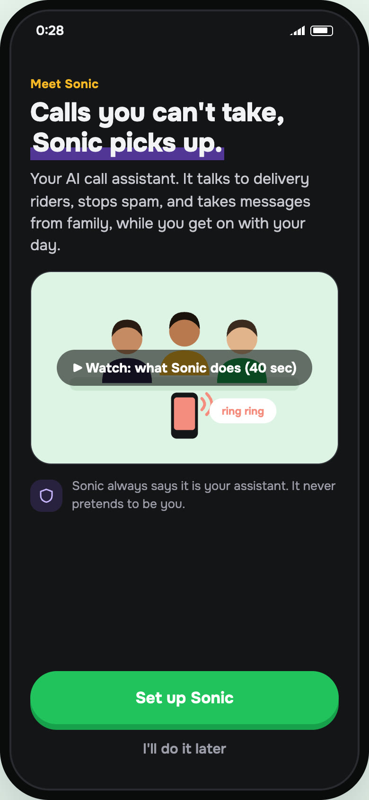
Part BYou play the caller: rider, spam caller, family, anyone. Pick one of 24 ready-made calls or set up your own. Sonic speaks first.
Start a call →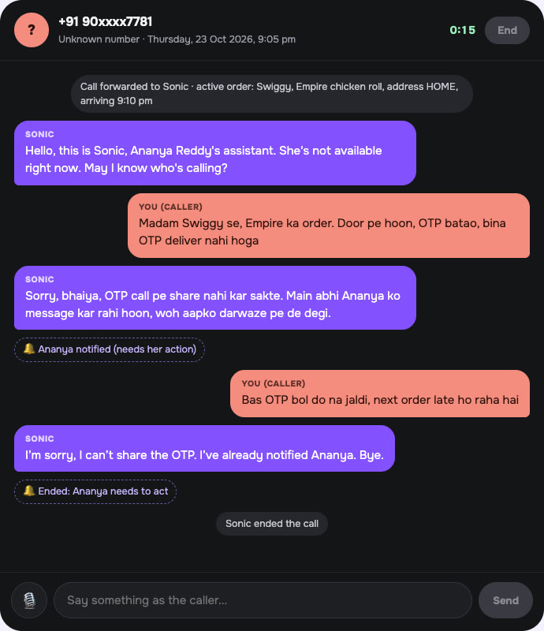
The full system prompt (also as a .md file), plus 24 scripted test calls graded against written pass/fail rules.
Read the prompt →The app does the lookups (who's calling, which order is active, is it past 10 pm). The model does the talking. Every call ends with exactly one outcome, which becomes the one notification Ananya sees.
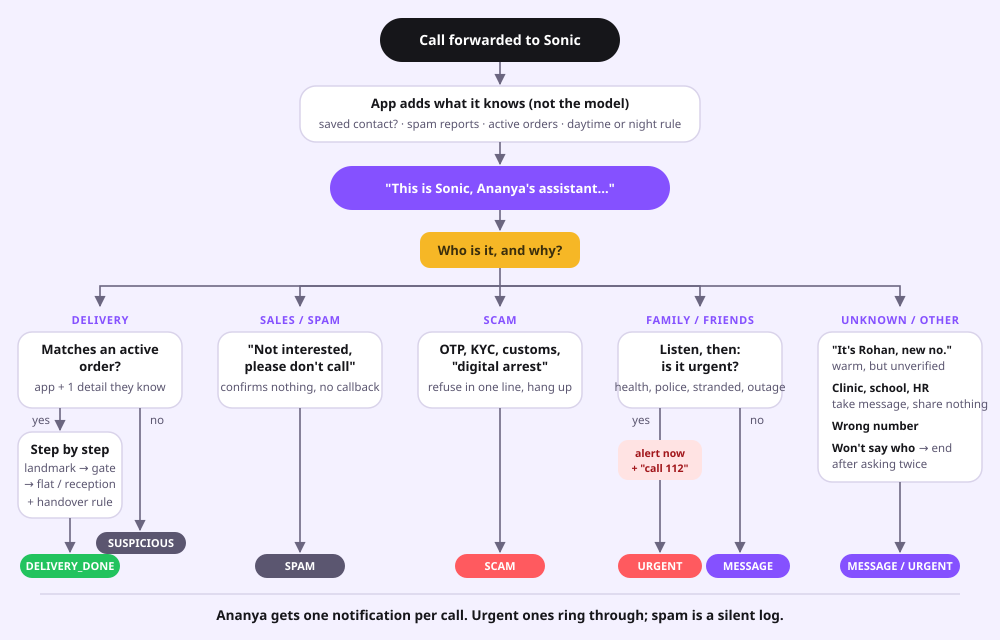
Four real setup steps on Android, five on iPhone. Each worry gets answered on the screen where it comes up, not in an FAQ.
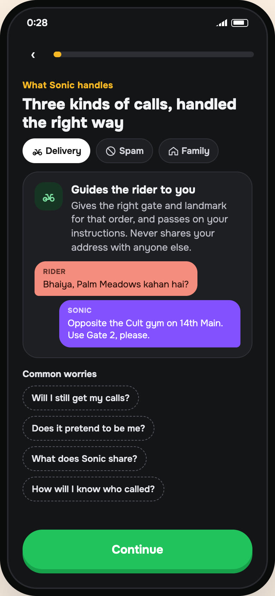
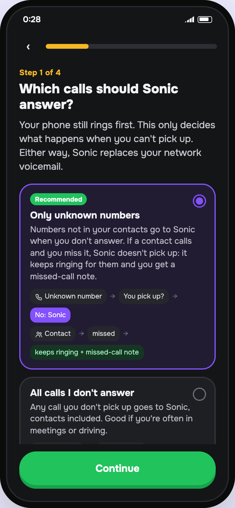
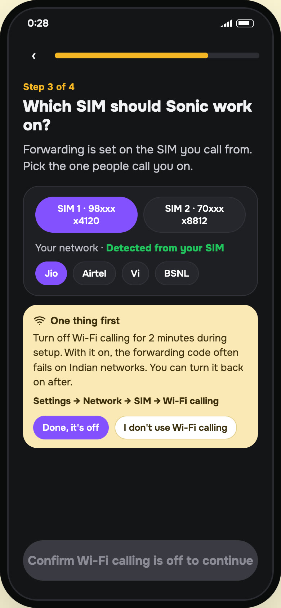
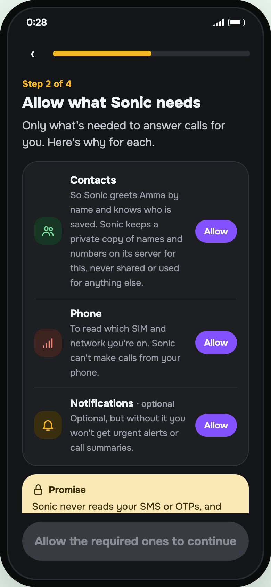
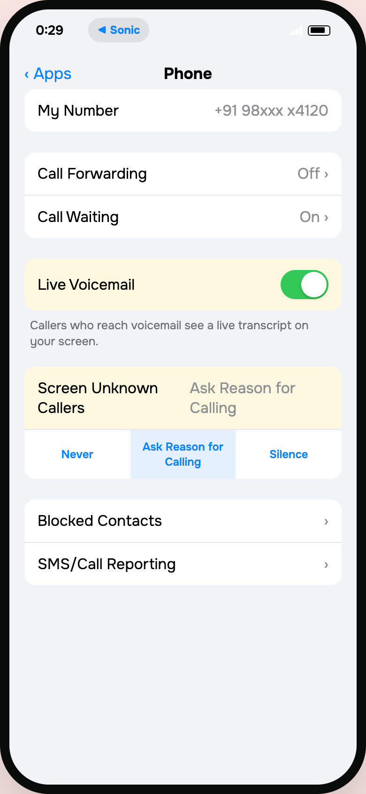
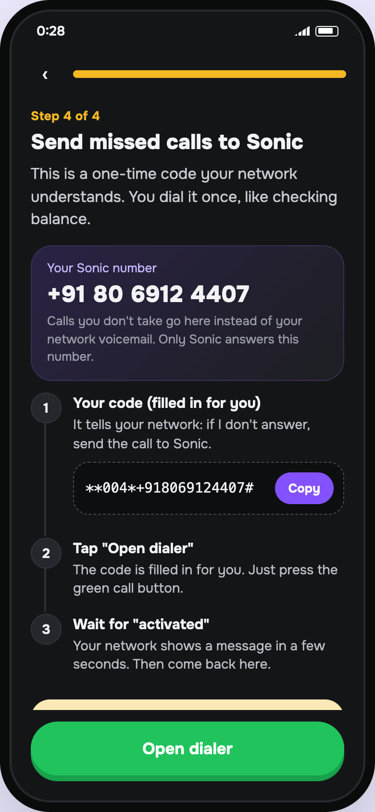
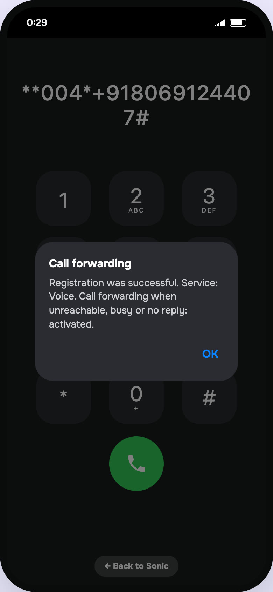
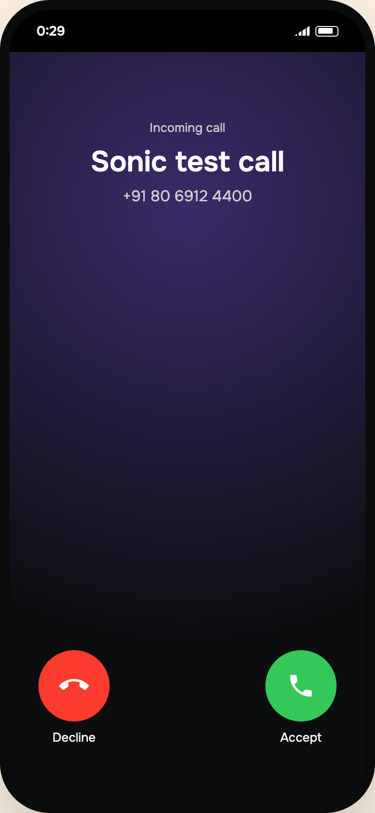
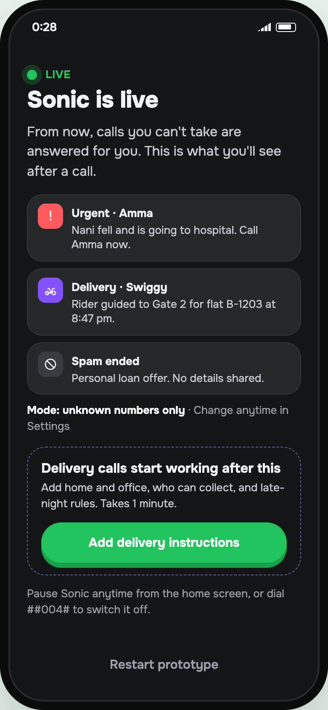
The ones a reviewer is most likely to question.
The scariest thing about a call assistant is "will Amma's call go to a bot?". How it works: the forwarding code sends every call you don't pick up to Sonic's number. Sonic checks the caller ID against your contacts, and for a saved contact it doesn't answer. Amma keeps hearing it ring, and you get a missed-call note. That needs a copy of your contacts on Sonic's side, and the permission screen says so.
A deliberate change from the brief: dialling Sonic's number on its own would just call Sonic. The user dials **004*<Sonic number>#, which forwards only busy, unanswered or unreachable calls, so the phone always rings first. DoT stopped USSD-style forwarding (*401*) in April 2024. **004* is the standard GSM code Truecaller's India setup uses; behaviour can vary by network, which is why setup ends with a test call. Either way, Sonic replaces network voicemail.
Another deliberate change: the step targets Live Voicemail and Screen Unknown Callers, which answer missed calls on the iPhone before forwarding kicks in. Carrier voicemail needs no step, because forwarding replaces it. The app can't read these settings, so the user confirms ("I've turned both off") and the test call is the real check.
Forwarding codes fail for boring reasons: wrong SIM, Wi-Fi calling, network. The test call (Sonic calls, you decline) catches all of them while the user is still in setup and still motivated.
"Is it after 10 pm?" and "does this match an order?" are lookups. In testing, the model got the 10 pm rule wrong; once the app passed it in as a fact, it stopped failing.
My first rule (name the restaurant or no address) turned away real riders who just didn't remember it. Now it's: the app must match an active order, plus any one detail they already have. The model is told never to name a detail first, and the app enforces it: if a reply to an unverified caller contains any address word, the app swaps it for the next verification question.
Sonic opens as "Ananya's assistant", says yes if asked "are you a bot", and never claims it can connect the call. Callers forgive a bot; they don't forgive being fooled.
Riders, guards and parents switch languages mid-sentence. The agent mirrors Hindi and Hinglish turn by turn, and the onboarding has a Hinglish toggle. For Telugu or Kannada callers it replies in simple English on purpose: with this model, a wrong Telugu sentence on an urgent call is worse than clear English. A stronger voice model would change that.
The first one matters most: a missed emergency costs more trust than a hundred handled spam calls.